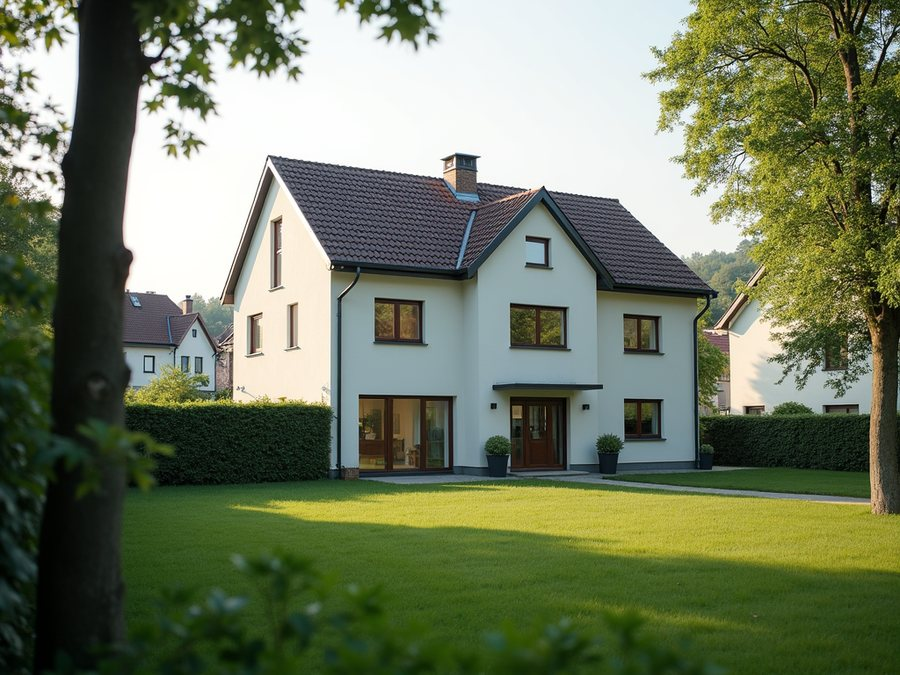

Immobilienmaklerin · Rabenau
Ihre Immobilie in Rabenau – ehrlich bewertet, diskret verkauft.
Sie möchten ein Haus oder eine Wohnung in Rabenau verkaufen? Ich bin Janine Kreiser, Immobilienmaklerin mit Büro an der Obernaundorfer Straße – praktisch an der Grenze zu Rabenau. Ich kenne die Lagen zwischen Oelsa, Lübau, Spechtritz, Karsdorf und dem Rabenauer Grund und sage Ihnen ehrlich, was Ihre Immobilie wirklich wert ist.
Kostenlose Wertermittlung vor Ort – persönlich, unverbindlich, aus der Nachbarschaft.
Kostenlose Bewertung in Rabenau anfragen
Aus der Nachbarschaft
Eine Maklerin, die Rabenau kennt – nicht nur vom Navi.
Mein Büro liegt an der Obernaundorfer Straße – und Obernaundorf ist ein Ortsteil von Rabenau. Näher an Rabenau geht es kaum. Ich bin hier zu Hause, nicht nur geschäftlich: Ich kenne den Weg durch den Rabenauer Grund, weiß, wie unterschiedlich die Hanglagen über der Roten Weißeritz sind, und kenne den Unterschied zwischen einem Grundstück in Oelsa und einem in Spechtritz.
Genau diese Ortskenntnis macht beim Verkauf den Unterschied. Denn in Rabenau entscheidet nicht nur die Quadratmeterzahl über den Preis, sondern die konkrete Lage, der Zuschnitt des Grundstücks und die Nachfrage im jeweiligen Ortsteil. Ein überregionaler Makler oder ein Online-Rechner sieht davon wenig – ich schon.
Rabenau richtig einordnen
Wohnlage mit Charakter: zwischen Weißeritztal und Dresdner Umland.
Rabenau ist eine Kleinstadt mit rund 4.400 Einwohnerinnen und Einwohnern im Landkreis Sächsische Schweiz-Osterzgebirge – südlich von Dresden, direkt an Freital angrenzend. Das macht die Lage für Familien und Pendler attraktiv: ländlich und ruhig, aber mit kurzer Anbindung nach Dresden und Freital.
Prägend ist der Rabenauer Grund – ein tief eingeschnittenes, überwiegend als Naturschutzgebiet ausgewiesenes Tal der Roten Weißeritz, durch das die schmalspurige Weißeritztalbahn dampft. Dazu kommt die lange Tradition als Stuhlbaustadt, an die heute das Deutsche Stuhlbaumuseum erinnert. Diese Mischung aus Natur, Geschichte und Nähe zur Stadt ist ein echtes Verkaufsargument – wenn man es im Exposé richtig erzählt.
Was Ihr Haus oder Ihre Wohnung in Rabenau heute konkret wert ist, lässt sich seriös nur vor Ort beantworten. Eine belastbare Einschätzung bekommen Sie bei einem kostenlosen Termin – so läuft die Bewertung ab.
Für Ihren Verkauf in Rabenau
Was ich für Sie übernehme.
Kostenlose Bewertung vor Ort
Ehrliche Markteinschätzung für Ihr Haus oder Ihre Wohnung in Rabenau – mit Begehung, nicht per Zufallszahl aus dem Internet.
Verkaufsvorbereitung & Exposé
Unterlagen, aussagekräftige Fotos und ein Exposé, das die Lage zwischen Weißeritztal und Dresdner Umland überzeugend erzählt.
Diskrete Vermarktung
Auf Wunsch diskret und gezielt – auch über bereits vorgemerkte Kaufinteressenten für die Region. Sie bestimmen das Tempo.
Begleitung bis zur Übergabe
Von der Unterlagenbeschaffung über die Preisverhandlung bis zum Notartermin und der Schlüsselübergabe – Schritt für Schritt an Ihrer Seite.
In ganz Rabenau
Für Rabenau und seine Ortsteile.
Ich begleite Verkäuferinnen und Verkäufer in Rabenau selbst sowie in den Ortsteilen Oelsa, Lübau, Spechtritz, Karsdorf und Obernaundorf – und natürlich im angrenzenden Bannewitz, Possendorf, Freital und dem südlichen Dresdner Umland.
Egal, ob ruhiges Einfamilienhaus am Ortsrand, Eigentumswohnung oder geerbtes Objekt mit lückenhaften Unterlagen: Sie bekommen eine ehrliche Einschätzung und einen klaren nächsten Schritt.
Häufige Fragen
Rund um den Verkauf in Rabenau.
Sind Sie auch in Rabenau tätig?
Ja. Rabenau und seine Ortsteile – Oelsa, Lübau, Spechtritz, Karsdorf und Obernaundorf – gehören zu meinem festen Einzugsgebiet. Mein Büro liegt an der Obernaundorfer Straße, praktisch an der Grenze zu Rabenau.
Was kostet die Bewertung?
Die erste, ehrliche Markteinschätzung ist kostenlos und unverbindlich. Eine erfolgsabhängige Provision entsteht erst, wenn Sie sich für einen Verkauf mit mir entscheiden.
Warum reicht ein Online-Rechner nicht?
Lage ist in Rabenau kleinteilig: eine Hanglage über dem Rabenauer Grund, ein Grundstück in Oelsa oder die Nähe zur Weißeritztalbahn wirken sich unterschiedlich aus. Nur eine Begehung vor Ort bildet das realistisch ab.
Muss ich nach der Bewertung verkaufen?
Nein. Den Wert zu kennen heißt nicht, verkaufen zu müssen. Wenn Abwarten, Vermieten oder eine kleine Entwicklung mehr für Sie herausholt, sage ich Ihnen das offen.
Zum Weiterlesen
Mehr zum Immobilienmarkt in Rabenau.
Kostenlos & unverbindlich
Was ist Ihre Immobilie in Rabenau wert?
Rufen Sie mich an oder schreiben Sie mir kurz Ihre Situation – ich melde mich mit einer ehrlichen ersten Einschätzung und einem Termin für die kostenlose Bewertung vor Ort.